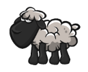
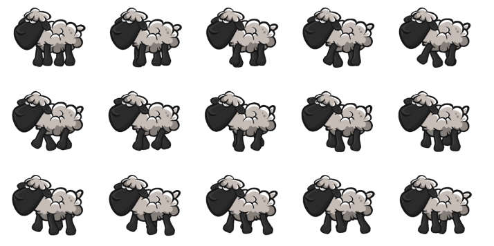
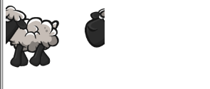
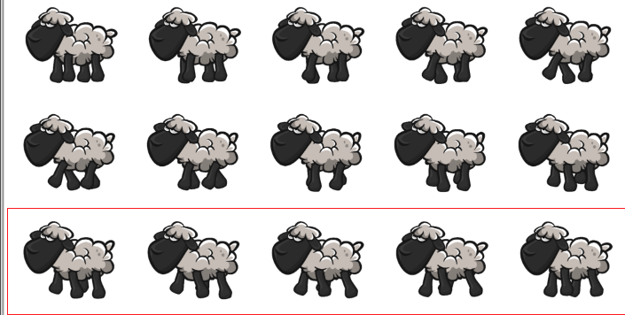
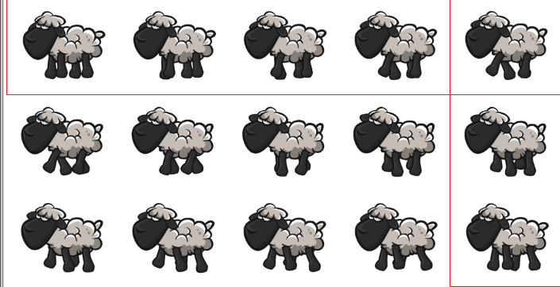
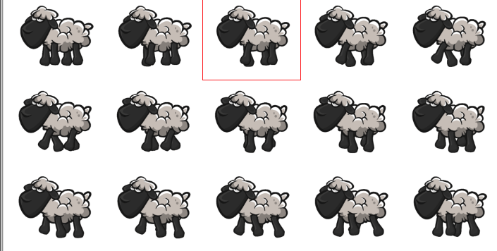
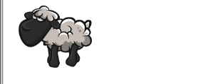
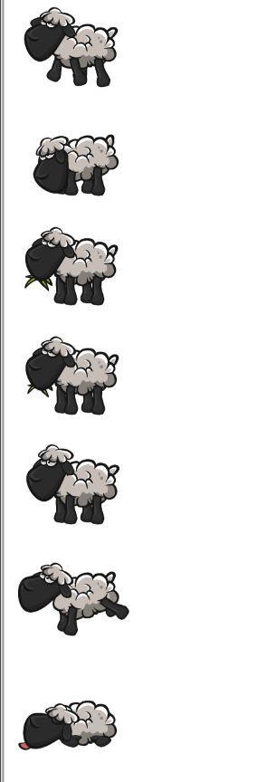

Animating spritesheet, is easy when using a software, but what if I want to do it only using CSS ? Alright first of all I need a sprite sheet to move this guy:

Let’s start with a walk to stay fit :)

Oh, and since I cannot even correctly handle a pencil, I’ll use spritesheets coming from here.
We are now ready to begin our journey. Let’s start and display our little sheep here.
Ok, my spritesheet is 2095x1089 pixels. So my sheep is a 419x363px repetition.
<html>
<head>
<style type="text/css">
#sheep {
width: 419px;
height: 363px;
background: url('spritesheets/white_sheep_1/__white_sheep_1_walk.png');
}
</style>
</head>
<body>
<div id="sheep"></div>
</body>
</html>It’s seems alright:
Now, we need to display successively each frame. There is 3 rows of 5 images, that’s 15 frames then !
With a little research, we eventually found the animation css rule. it works pretty much everywhere
#sheep {
width: 419px;
height: 363px;
background: url('spritesheets/white_sheep_1/__white_sheep_1_walk.png');
animation: play 0.8s steps(15) infinite;
}
@keyframes play {
100% { background-position: -2095px; }
}It says, use the “play” keyframes (bellow) to move the background position from 0 to -2095px and instead of smothing the animation, move in 15 steps/jumps of my width (419px), please do all this in 0.8 sec, then loop over and over again. that makes more or less 2 images every 0.1 sec. I’ve picked this interval at randon I’ll adjust it later if needed.
let’s see the result:

Oooook, something is wrong here, It seem that the loop only contain the first row… it doesn’t goes on the second nor the third. We need to find a way to go horizontaly as well. Let’s display the all image as grid, and display in a square what we intend to show.
#sheep {
width: 2095px;
height: 1089px;
background: url('spritesheets/white_sheep_1/__white_sheep_1_walk.png');
position: relative;
}
#sheep:before {
content: "";
position: absolute;
width: 100%;
height: 363px;
left: 0px;
top: 0px;
border: solid 1px red;
animation: playvertical 2s steps(3) infinite;
}
@keyframes playvertical {
0% { top: 0px; }
100% { top: 1089px; }
}What we do is add a red line around each line of sheeps and move their position from top to bottom instead of moving the background. since there is 3 lines I tell the animation to move in 3 steps.

Let’s add the same principle for the horizontal lines.
#sheep:after {
content: "";
position: absolute;
width: 419px;
height: 100%;
left: 0px;
top: 0px;
border: solid 1px red;
animation: playhorizontal 3s steps(5) infinite;
}
@keyframes playhorizontal {
0% { left: 0px; }
100% { left: 2095px; }
}
Whoo ! We can see we got here the idea of running through each image. It seems we can tell the animation to play any number of animation we need ! Great :) Let’s unite the two seperate animations in the same instruction and border only the frame we want to display.
#sheep {
width: 2095px;
height: 1089px;
background: url('spritesheets/white_sheep_1/__white_sheep_1_walk.png');
position: relative;
}
#sheep:before {
content: "";
position: absolute;
width: 419px;
height: 363px;
left: 0px;
top: 0px;
border: solid 1px red;
animation: playvertical 9s steps(3) infinite, playhorizontal 3s steps(5) infinite;
}
@keyframes playvertical {
0% { top: 0px; }
100% { top: 1089px; }
}
@keyframes playhorizontal {
0% { left: 0px; }
100% { left: 2095px; }
}
Alright, almost done ! Instead of moving this red border, what if I move the background in the same way ? Now we can remove the red line and replace the animation directly on the sheep div. Last thing to change is the keyframes, instead of changing the top or left position of the lines, we want to move the background position in Y and X according to our previous tests, but adjusted to the sheep size.
#sheep {
width: 419px;
height: 363px;
background: url('spritesheets/white_sheep_1/__white_sheep_1_walk.png');
position: relative;
animation: playvertical 0.9s steps(3) infinite, playhorizontal 0.3s steps(5) infinite;
}
@keyframes playvertical {
0% { background-position-y: 0px; }
100% { background-position-y: -1089px; }
}
@keyframes playhorizontal {
0% { background-position-x: 0px; }
100% { background-position-x: -2095px; }
}
Whou hou ! We can now apply the same rule to every animation we got.
Little specificity, sometimes you need to stop the animation on the last frame, instead of playing it over and over. The solution is to replace “infinite” by “forward”. It act as if there was 1 frame less than it should, goes one frame further (the last one we want) and stop there.
If my animation has 5 steps, I’ll declare it like this.
#die {
width: 419px;
height: 363px;
background: url('spritesheets/white_sheep_1/__white_sheep_1_die.png');
animation: die 0.6s steps(4);
animation-fill-mode: forwards;
}
@keyframes die {
0% { background-position-x: 0px; }
100% { background-position-x: -1676px; }
}Tadda !

Thanks for reading !